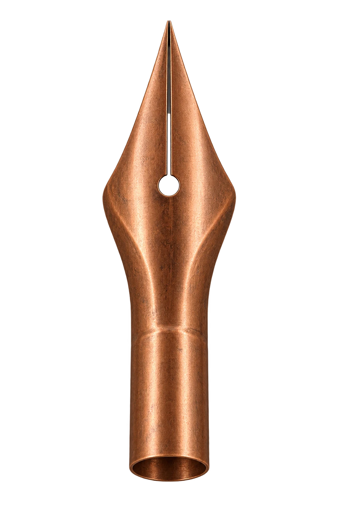

Feel
the line.
A NOTE TO NIBLET
6stroke studies
prepared.
prepared.
A little pressure. A different line.
The centerline stays.
The edges respond.

ACROSS THE LINE
Each edge sits half a width away from the centerline, along its perpendicular normal. Pressure changes the distance between those edges.
The six supplied samples are equally spaced along arc length. Between them, pressure is interpolated linearly.
Selected normal enlarged to 6 display pixels per SVG unit. The 2-unit floor remains visible even at zero pressure.